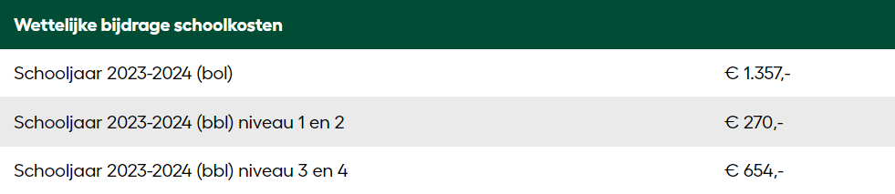
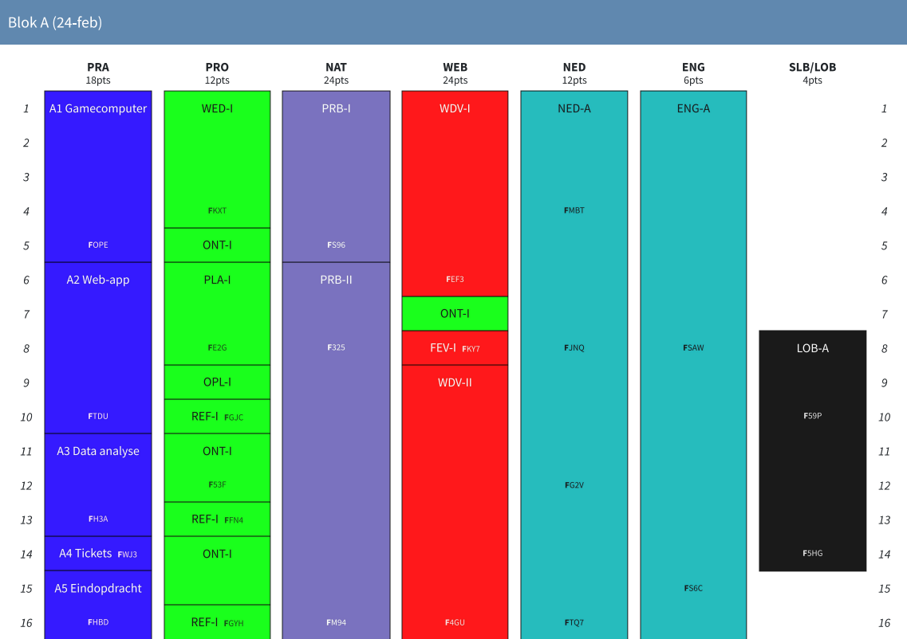

Tijdens de opleiding tot software developer ontwikkelt u uitgebreide kennis van app- en programmatuurontwikkeling. U zult bekwaam worden in programmeertalen zoals C#, PHP en Javascript. Gedurende de opleiding leert u hoe u webbased applicaties, websites en toepassingssoftware kunt ontwikkelen. Ook wordt er veel aandacht besteed aan het afstemmen van uw werk op de wensen van de klant en het testen van uw eigen apps. Deze opleiding bereidt u uitstekend voor op een carrière als professional in de softwareontwikkeling.
Vakken Overzicht
Engels
Engels is een belangrijk vak voor je communicatieve vaardigheden. Je zult je taalvaardigheid verbeteren om internationaal te kunnen communiceren.
Nederlands
Dit vak is gericht op het verfijnen van je schrijf- en spreekvaardigheid in het Nederlands.
Programmeren
Leer de basisprincipes van programmeren met verschillende talen zoals C#, PHP en JavaScript.
Webontwikkeling
Ontwikkel vaardigheden in HTML, CSS en JavaScript om webpagina's en webapplicaties te maken.
Databases
Verken het ontwerp en het beheer van databases en leer SQL-queries schrijven.
Software Engineering
Leer over softwareontwikkelingsmethodologieën en projectbeheer om effectieve softwareoplossingen te creëren.
Wiskunde
Versterk je analytische vaardigheden door het bestuderen van algebra, calculus en statistiek.
Projectmanagement
Leer technieken en tools om projecten efficiënt te plannen, uit te voeren en af te ronden.
Dit kost het
Ieder die op 1 augustus 18 jaar of ouder is, moet volgens de wet meebetalen aan het les- of cursusgeld.
Wettelijke bijdrage schoolkosten

Het lesgeld voor een bol-opleiding wordt betaald aan de Dienst Uitvoering Onderwijs (DUO). Het cursusgeld voor een bbl-opleiding wordt betaald aan Curio. Het les- of cursusgeld is een vast bedrag per studiejaar (van 1 augustus tot en met 31 juli).
Alle onderwijsbenodigdheden en vrijwillige schoolkosten
Natuurlijk kunnen er naast het les- of cursusgeld ook kosten zijn voor spullen die je nodig hebt op school. Dit omvat bijvoorbeeld onderwijsbenodigdheden of vrijwillige schoolkosten.
Voorbeeld van het rooster
Hier is een overzicht van hoe jouw week eruitziet als softwaredeveloper-student
Versnelling optie
Bij onze opleiding heeft u de mogelijkheid om de duur van vier jaar te verkorten naar drie jaar door een versnellingstraject te volgen. Door voor deze versnelde route te kiezen, slaat u blok E over, waardoor u sneller kunt afstuderen. Deze versnelde aanpak is ideaal voor gemotiveerde studenten die hun diploma snel willen behalen en eerder willen beginnen aan hun carrière. Het versnellen van de opleiding vraagt om sterke inzet en goede planning, maar biedt u de kans om uw doelen in een kortere tijd te bereiken.
Overzicht van het Eerste Jaar
In Block A van je opleiding ga je HTML, CSS en Python leren, terwijl je ook je taalvaardigheden in Nederlands en Engels verder ontwikkelt.

In Block B ga je dieper werken met PHP, SQL en C#, naast het vervolg van je rekenvaardigheden en je Nederlands en Engels verder ontwikkelen.
Tijdens de opleiding tot software developer leer je een breed scala aan vakken. Deze omvatten onder andere Engels, wat belangrijk is voor je communicatieve vaardigheden, en Nederlands, gericht op het verfijnen van je schrijf- en spreekvaardigheid. Verder krijg je basiskennis van programmeren met talen zoals C#, PHP en JavaScript, evenals webontwikkeling met HTML, CSS en JavaScript. Je leert ook over databases, software engineering, wiskunde en projectmanagement.
Benodigde Hulpmiddelen
Om een MBO 4-opleiding tot softwaredeveloper te volgen, heb je een krachtige laptop of desktopcomputer nodig met het juiste besturingssysteem (zoals Windows, macOS of Linux), ontwikkelingssoftware, en een betrouwbare internetverbinding. Deze hulpmiddelen zijn essentieel om te leren programmeren en software te ontwikkelen.
Wat je leert tijdens de opleiding
Je werkt in teams en leert hoe je applicaties ontwikkelt en onderhoudt. In het eerste jaar krijg je een basis in programmeertalen zoals HTML, CSS en Python. Het tweede jaar omvat het werken met bedrijfsgerichte frameworks zoals Laravel en Laragon, en algemene vakken zoals Nederlands, Engels, rekenen, en loopbaan- en burgerschapsvaardigheden. Je ontwikkelt zowel technische als niet-technische vaardigheden om succesvol te zijn als software developer.
Carrièremogelijkheden
Na het afronden van je opleiding tot software developer kun je diverse carrièremogelijkheden overwegen. Deze variëren van het ontwikkelen van software voor bedrijven, het werken als webdeveloper, tot het starten van je eigen bedrijf. Er zijn ook kansen om door te groeien naar functies zoals systeemarchitect of projectmanager in de IT-sector.
Studie in Cijfers
Studie in Cijfers geeft informatie per opleiding. Cijfers over hoeveel studenten voor de opleiding slagen. Of hoe tevreden studenten zijn. Ook vind je er informatie over de arbeidsmarkt, zoals de kans op werk of een stage, en het startsalaris dat daarbij hoort. Je ziet ook meteen hoe die cijfers verschillen van landelijke cijfers.
Bekijk hieronder de Studie in Cijfers van deze opleiding.